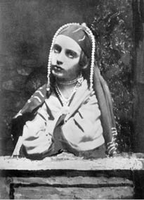

1. Bölüm
Oğlan –günün modası cinsiyetini bir parça gizlese de erkek olduğu besbelliydi– bir Mağribi’nin çatı kirişlerinden sallanan kafasını doğramakla meşguldü. Kafa, eski bir futbol topu rengindeydi, çökük yanaklarını ve hindistancevizinin saçakları gibi kalın, bir-iki tutam kaba, kuru saçı saymazsak biçimi de topu andırıyordu. Orlando’nun babası, ya da belki büyükbabası, Afrika’nın vahşi kırsalında, ayın altında birden ortaya fırlayan iri bir putperestin boynunu vurup almıştı o kelleyi; şimdi de o kafa, sahibini katletmiş olan beyefendinin devasa evinin çatı arasından eksik olmayan esintide usul usul sallanıp duruyordu.
Orlando’nun ataları çirişotu tarlalarında, taşlık alanlarda, tanımadıkları nehirlerin suladığı çayırlarda at koşturmuşlardı ve pek çok omuzdan pek çok renkte pek çok kafa kesmişlerdi, sonra da onları getirip çatıdaki kirişlerden sallandırmışlardı. Orlando da aynısını yapacaktı, yemin ediyordu. Ama ancak on altı yaşındaydı, onlarla birlikte Afrika’da ya da Fransa’da at koşturamayacak kadar gençti, bu yüzden annesinin ve bahçedeki tavuskuşlarının yanından sıvışıp çatı katındaki odasına gidiyor, orada kılıcını sağa sola savuruyor, saldırıyor, havayı yarıyordu. Bazen ipi kesiyor, kafatası yere düşüyordu, o zaman onu tutup yeniden ipe bağlaması gerekiyordu, biraz kibarlık gösterip ulaşılması zor olan bir yere tutturuyor, düşmanı da ona büzülmüş, kararmış dudaklarıyla zafer kazanmışçasına sırıtıyordu. Kafatası öne arkaya sallanıyordu, çünkü en tepesinde yaşadığı ev o kadar büyüktü ki, sanki rüzgâr bile onun içinde hapsoluyor, yazın da kışın da kâh o yana kâh bu yana esiyordu. Üzerinde avcı motifleri olan yeşil kapı perdesi durmadan kımıldıyordu. Orlando’nun ataları oldum olası soylu kişilerdi. Başlarında taçlarıyla kuzeyin sislerinin arasından çıkıp gelmişlerdi. Odadaki yol yol karanlık ve zeminde çapraz desenler oluşturan sarı göller, penceredeki büyük armanın vitraylı camından giren güneşin eseri değil miydi? Orlando şimdi hanedan armasındaki leoparın sarı gövdesinin tam ortasında duruyordu. Pencereyi itip açmak için elini pervaza koyduğunda eli bir anda, tıpkı bir kelebeğin kanadı gibi kırmızı, mavi ve sarıya boyandı. Dolayısıyla, sembollerden hoşlananlar ve onları çözmeye meraklı olanlar, biçimli bacaklarını, güzel bedenini ve düzgün omuzlarını hanedan ışığı çeşitli renklerle bezemiş olsa da, pencereyi açarken Orlando’nun yüzünü sadece güneş ışığının aydınlattığını görebilirlerdi. Onunkinden daha dürüst, daha asık bir yüz bulmak mümkün değildi. Ne mutlu böyle birini karnında taşıyan anneye ve ne mutlu böyle birinin yaşamöyküsünü yazan kişiye! Ne annesinin küsmesine gerek vardır ne de biyografi yazarının bir romancının ya da şairin yardımını istemesine. Eylemden eyleme, zaferden zafere, görevden göreve geçmelidir, yazmanı da peşinden, ta ki ikisinin de arzularının doruk noktasında hangi makam varsa oraya ulaşana kadar. Bakıldığında Orlando tam da böyle bir kariyer için yaratılmıştı. Kırmızı yanakları ayva tüyleriyle kaplıydı; dudaklarının üzerindeki ayva tüyleri yanaklarındaki tüylerden azıcık daha kalındı. Dudaklarıysa küçüktü ve az bulunur beyazlıktaki inci gibi dişlerinin üzerinde hafifçe gergin duruyordu. Kısa, kalkık, sivri burnu kusursuzdu; saçları koyu renkti, kulakları ufaktı, başına yapışıktı. Ama ne yazık ki alnıyla gözlerinden söz etmeden bu gençliğe özgü güzellikleri bitirmek mümkün değil. Ne yazık ki insanlar nadiren bu üçünden yoksun olarak dünyaya geliyorlardı; çünkü pencerenin önünde duran Orlando’ya bakar bakmaz gözlerinin birer ıslak menekşeye benzediğini kabul ederdiniz, öyle iriydiler ki sanki içlerini tıka basa dolduran su onları genişletmişti; alnı, iki boş madalyona benzeyen şakaklarının arasına sıkıştırılmış bir mermer kubbe gibi kavisliydi. Gözlerine ve alnına bakar bakmaz övgülere girişiriz. Gözlerine ve alnına bakar bakmaz beğenmediğimiz binlerce şey olduğunu kabul ediyoruz ama her iyi biyografi yazarı bunları görmezden gelmeyi amaçlar. Peşinde hizmetçisi Twitchett’le tavuskuşlarını beslemek üzere dışarı çıkan, yeşiller giymiş çok güzel bir kadın olan annesininki gibi manzaralar onu rahatsız ederdi; bazı manzaralar da heyecan verirdi –kuşlar ve ağaçlar; ve ölüme âşık ederlerdi –akşamın göğü, yuvaya dönen kargalar; ve böylece, beynine giden döner merdiveni tırmanan –ki ferah bir yerdi beyni– bütün bu görüntüler ve bahçedeki sesler de, çekiç darbeleri, kesilen odunlar da, tutkuları ve duyguları ayaklandırır ve bir karmaşa başlatırdı ki her iyi biyografi yazarı bundan nefret eder. Ama devam edelim – Orlando yavaşça başını içeri çekti, masaya oturdu ve hayatının her günü, bu saatte ne yapıyorsa onu yapan biri gibi yarı bilinçli-yarı bilinçsiz, üzerinde “Aethelbert: Beş Perdelik Trajedi” yazan bir defter çıkardı, eski, lekeli bir kaz tüyünü mürekkebe batırdı.
Çok geçmeden ondan fazla sayfayı şiirle doldurmuştu bile. Hiç takılmadan yazdığı belliydi, ama soyuttu yazdıkları. Kötülük, Suç, Istırap, yazdığı dramın başkişileriydi; hiç olmayacak topraklardan krallar ve kraliçeler vardı; korkunç komplolar kafalarını karıştırıyor, soylu duygular sarıp sarmalıyordu; onların söylediği bir tek sözü bile kendisi söylemezdi, ama yaşına göre –on yedisinde bile yoktu– ve on altıncı yüzyılın sonuna daha birkaç yıl olduğu düşünülürse, hepsini dikkat çekecek derecede akıcı ve güzel kotarıyordu. Bununla birlikte sonunda durdu. Bütün genç şairlerin sürekli yaptığı gibi o da doğayı betimliyordu, yeşilin tonunu kusursuz verebilmek için de o nesnenin kendisine bakıyordu (bu noktada herkesten daha fazla cesaret sahibiydi), ki bu nesne de pencerenin altındaki defne ağacıydı. Ondan sonra, doğal olarak artık yazamadı. Doğadaki yeşil bir şeydir, edebiyattaki yeşil başka bir şey. Doğayla edebiyat arasında doğuştan bir antipati var gibidir, yan yana getirilseler birbirlerini parçalarlar. Orlando’nun şimdi gördüğü yeşil renk, uyağını bozmuş, veznini dağıtmıştı. Daha da ötesi, doğanın kendine özgü birtakım oyunları vardır. Çiçeklere konan arılara bakın pencereden, esneyen bir köpeğe, batan güneşe; “güneşin batışını daha kaç kez göreceğim” diye düşünün filan (çok bilinen bir düşünce olduğu için yazmaya değmez), o zaman kalemi elinizden bırakırsınız, pelerininizi alıp odadan çıkarsınız, çıkarken de ayağınızı boyalı bir sandığa çarparsınız. Çünkü Orlando biraz sakardı.
Kimseyle karşılaşmamaya dikkat ediyordu. Bahçıvan Stubbs geliyordu karşıdan. Adam geçene kadar bir ağacın arkasına saklandı. Bahçe duvarındaki küçük bir kapıdan dışarı çıktı. Bütün ahırların, köpek kulübelerinin, bira üretilen yerlerin, marangozhanelerin, çamaşırhanelerin, mum yapılan, öküz boğazlanan, at nalı hazırlanan, deri yelek dikilen yerlerin uzağından dolaştı –çünkü ev, çeşitli işler yapan adamların doldurduğu gürültülü bir kasabaydı– kimseye görünmeden parktan geçip tepeye uzanan eğreltiotu kaplı patikaya ulaştı. Nitelikler arasında belki de bir kan bağı vardır; biri öbürünü peşinden götürüyordur; biyografi yazarı bu noktada, sakarlıkla yalnız kalma arzusunun sıklıkla eşleştiğine dikkat çekmelidir. Bir sandığa ayağı takılıp tökezleyen Orlando doğal olarak kimsenin olmadığı yerleri, geniş manzaraları, kendini sonsuza, sonsuza, sonsuza kadar yalnız hissetmeyi seviyordu.
Uzun bir sessizlikten sonra nihayet, “Yalnızım” diye fısıldadı, bu anlatıda ağzını ilk kez açıyordu. Tepeye tırmanırken eğreltiotlarının ve alıç çalılarının arasından, geyikleri ve vahşi kuşları ürküterek hızla geçmiş, tek bir meşe ağacının süslediği bir yere ulaşmıştı. Orası çok yüksekti, öyle yüksekti ki, aşağıda on dokuz İngiliz kontluğu görülebiliyordu; bulutsuz günlerde, hava da güzelse otuzu, hatta kırkı buluyordu görülen kontluklar. Bazen Manş Denizi de görülebiliyordu, birbirinin üstüne binen dalgalarıyla. Nehirler ve üzerlerinde kayan gezi tekneleri de görülebiliyordu; denize açılan kalyonlar da; top ateşlerinin boğuk sesleri duyulan, bacalarından duman yükselen donanma gemileri de; ve sahildeki kaleler de; ve çayırların arasındaki şatolar da; şurada bir gözetleme kulesi, orada bir kale de; bazen de Orlando’nun babasınınki gibi, vadide kümelenmiş, duvarlarla çevrili bir kasabaya benzeyen büyük bir malikâne. Doğuda Londra’nın sivri kuleleri ve şehrin dumanları vardı; ve belki ufuk çizgisinin tam üstünde rüzgâr doğru yönden eserse, Snowdon’un sarp doruğu ve oluklu yamaçları da bulutların arasından yükselirdi. Orlando bir an durarak saydı, gözledi, tanıdı. Şurası babasının eviydi; öteki de amcasınınki. Oradaki ağaçların arasındaki o üç büyük kule teyzesine aitti. Fundalıklar onlarındı, orman da; tavuskuşlarıyla geyikler, tilki, porsuk ve kelebek de.
Derin derin iç geçirdi ve kendini meşe ağacının altına attı – bu kelimeyi hak edecek kadar tutkuluydu hareketleri. Yazın bütün bu geçiciliğinin altında, altındaki toprağın omurgasını hissetmek hoşuna gidiyordu; meşe ağacının sert köklerini böyle algılıyordu çünkü; ya da, imgeler birbirini izlediğinden, iri bir atın sırtında görüyordu kendini, ya da sağa sola savrulan bir geminin güvertesinde – sert olduğu sürece, herhangi bir şey olabilirdi, çünkü avare kalbini bağlayabileceği bir şeye ihtiyaç duyuyordu; yan tarafını çekiştirip duran kalbini; her akşam dışarı çıktığında, yaklaşık bu saatlerde rayihalı ve tutkulu fırtınalarla doluymuş gibi görünen kalbini. Onu meşe ağacına bağladı ve orada yatarken içindeki, çevresindeki çırpınmalar duruldu; küçük yapraklar sarktı, geyikler durdu; soluk yaz bulutları oldukları yerde kaldılar; yerdeki kolları bacakları kurşun gibi ağırlaştı; öyle sakin yattı ki geyikler yavaş yavaş yanına yaklaştılar, kargalar etrafında dönendiler, kırlangıçlar dalıp daireler çizdiler, sinekkuşları hızla geçtiler, sanki bir yaz akşamının bütün bereketi ve şehvetli faaliyeti onun bedenine bir örümcek ağı gibi dolanmıştı.
Bir saat kadar sonra –güneş hızla alçalıyordu, beyaz bulutlar kızarmıştı, dağlar eflatun, ormanlar mor olmuş, vadiler kararmıştı– bir borazan sesi duyuldu. Orlando ayağa fırladı. Tiz ses vadiden geliyordu. Aşağılardaki karanlık bir noktadan; sabit, belirli bir noktadan; bir labirent olabilirdi, duvarlarla çevrili bir kasaba; ses, vadideki kendi büyük evinin ta içinden geliyordu, önceden karanlık olan ev, Orlando bakarken ve tek borazanın sesi, kendisine katılan başka, daha da tiz seslerle çoğalırken karanlığını yitirdi, ışıklar delik deşik etti o karanlığı. Bazıları ufak, telaşlı ışıklardı, sanki hizmetkârlar koridorlarda kendilerini çağıranların yanına koşuyorlardı; kimileri de yüksekteydi, parlak ışıklardı, sanki gelmeyen konuklar için hazırlanmış boş balo salonlarında yanıyorlardı; bazıları da alçalıyor ve sallanıyor, iniyor ve kalkıyordu, işlerini görürken eğilen, çömelen, kalkan, bir şey alan, arabasından inen yüce bir prensesi eve girerken büyük bir saygıyla koruyan, ona eşlik eden uşakların ellerindeydiler. Avluda at arabaları dönüp uzaklaşıyorlardı. Atlar başlarındaki tüyleri sallıyorlardı. Kraliçe gelmişti.
Orlando daha fazla seyretmedi. Yokuş aşağı koştu. Küçük bir kapıdan içeri girdi. Dönerek yükselen merdivenden yukarı fırladı. Odasına ulaştı. Çoraplarını odanın bir tarafına fırlattı, deri yeleğini öbür tarafına. Başını suya soktu. Ellerini iyice temizledi. Tırnaklarını kesti. Boyu on beş santimi geçmeyen bir aynanın ve birkaç eski mumun yardımıyla, ahır saatinin gösterdiği on dakikadan az bir zamanda kırmızı pantolonunu, dantel yakasını, tafta yeleğini ve üzerinde iki yıldızçiçeği büyüklüğünde süs güller olan ayakkabılarını giydi. Hazırdı. Yanakları pençe pençeydi. Heyecanlıydı. Ama çok geç kalmıştı.
Bildiği kestirme yolları seçerek pek çok odadan ve merdivenden geçti, evin ta öbür ucundaki balo salonuna yöneldi. Ama yarı yolda, arkada, hizmetkârların yaşadıkları bölüme gelince durdu. Mrs. Stewkley’in oturma odasının kapısı açıktı – kuşkusuz bütün anahtarlarını alarak hanımefendisine hizmet etmeye gitmişti kadın. Ama hizmetkârların yemek yediği masada, yanında bir maşrapa, önünde bir kâğıtla oldukça şişman, kılıksız bir adam oturuyordu, boynundaki kırmalı yaka pek temiz değildi, kaba kumaştan giysileri kahverengiydi. Elinde kalem tutuyor ama yazmıyordu. Bir fikir üzerinde kafa yorar, o fikrin kendi hoşlanacağı bir biçim almasını ya da harekete geçmesini bekler gibiydi. Tuhaf dokulu yeşil bir taş gibi donuk olan patlak gözleri bir noktaya dikiliydi. Orlando’yu görmedi. Orlando’nun acelesi olsa da olduğu yere çakıldı. Bu adam bir şair olabilir miydi? Şiir mi yazıyordu? “Bu koca dünyadaki” demek istedi adama, “her şeyi anlatın bana” –çünkü Orlando, şairler ve şiirler hakkında en çılgın, en tuhaf, en sıra dışı fikirlere sahipti– ama insan kendisini görmeyen bir adamla nasıl konuşur? Sizi değil de insan yiyen devleri, satirleri, hatta belki denizin derinliklerini gören biriyle? Orlando orada dikilip seyrederken adam kalemini parmaklarının arasında evirip çevirdi, gözlerini bir yere dikti ve düşündü; sonra, bir çırpıda altı dize yazdı ve başını kaldırıp baktı. Utanan Orlando fırlayıp gitti, balo salonuna tam zamanında varıp diz çöktü, aklı karmakarışık durumda başını öne eğdi ve yüce Kraliçe’ye bir tastaki gülsuyunu sundu.
Orlando öyle utangaçtı ki Kraliçe’nin suya batırdığı yüzüklü ellerinden başka bir yerini göremiyordu; ama bu da yeterliydi. Unutulmayacak bir eldi, narindi, uzun parmakları bir küreyi ya da asayı kavrar gibi hep kıvrılıyorlardı; sinirli, huysuz, sağlıksız bir el, aynı zamanda buyurgan da; bir başın öne eğilmesi için o elin hafifçe kaldırılması yeterliydi; içinde naftalinlenmiş kürklerin korunduğu bir dolap gibi kokan yaşlı bir bedene ait olmalı bu el, diye düşündü Orlando; o beden çeşit çeşit brokarlar ve mücevherlerle donanmıştı; ve dimdikti, siyatik ağrıları çekmekte olsa da; binlerce korkuyla dolu olsa da gözlerini hiç kırpmıyordu; Kraliçe’nin göz rengi açık sarıydı. O iri yüzükler suyun içinde parıldarken bütün bunları hissetti Orlando, sonra saçlarına bir şey dokundu – belki de bu yüzden artık bir tarihçinin işine yarayabilecek bir şey göremedi. Gerçekten de kafasının içi öyle karmakarışıktı ki –gece ve mumların alevleri, kılıksız şair ve yüce Kraliçe, sessiz çayırlar ve hizmet edenlerin tıkırtılarıydı nedeni– hiçbir şey göremiyordu; ya da sadece bir el görüyordu.
Benzer şekilde, Kraliçe de sadece bir kafa görmüş olmalı. Ama bir bedenin nasıl olacağını, yüce bir kraliçenin bütün özellikleriyle, yani huysuzluk, cesaret, narinlik ve ürkütücülüğüyle donanmış bir ele bakıp da anlamak mümkünse, gözleri –manastırdaki balmumu heykellere güveneceksek– her zaman faltaşı gibi açık bir hanımefendinin oturduğu bir makam koltuğundan aşağıya bakınca bir beden de kuşkusuz kendisi hakkında çokça şey anlatabilir. Uzun dalgalı saçlar, Kraliçe’nin önünde saygıyla, masumca eğilmiş o esmer baş, akla genç bir soylunun bedenini taşıyan en güzel bacakları getiriyordu; ve menekşe renkli gözler; ve altın gibi bir kalp; ve sadakat ve erkeksi çekicilik – bu özellikler kendisine uzak kaldıkça onlara olan sevgisi daha da artıyordu yaşlı kadının. Çünkü yaşlanıyordu, yıpranıyordu ve erken çöküyordu. Top sesi hep kulaklarındaydı. Zehirden parlayarak düşen damla ve uzun hançer hep gözlerinin önündeydi. Masada otururken kulak kesiliyordu; Manş’taki top atışlarını duyuyordu; korkuyordu – bu bir lanet miydi, bir fısıltı mıydı? Masumiyet ve sadelik, arkalarındaki karanlık fona baktıkça daha da değerli oluyordu onun gözünde. Aynı gece, gelenek böyleydi, Orlando derin uykudayken, Kraliçe parşömeni imzalayıp mührünü koydu, önce Başpiskopos’a, sonra da Kral’a ait olan o büyük manastır binasını resmen Orlando’nun babasına verdi.
Orlando sabaha kadar her şeyden habersiz uyudu. Bir kraliçe tarafından öpülmüştü, ama kendisi bunu bilmiyordu. Ve belki de, çünkü kadın kalbi anlaşılmazdır, dudaklarını değdirdiği ânın anısının Kraliçe’nin aklında kalmasını sağlayan, genç kuzeninin (aralarında kan bağı vardı) masumiyeti ve o dokunuşla irkilişiydi. Her neyse, taşradaki bu sakin hayat iki yıl kadar sürmüş ve Orlando ancak yirmi kadar trajedi, bir düzine hikâye ve çokça sone yazmıştı ki bir haber geldi, Kraliçe kendisini Whitehall’a çağırıyordu.
“İşte” dedi Kraliçe, uzun galeride kendisine yaklaşan Orlando’ya bakarak, “benim masumum geliyor!” (Teknik açıdan bu kelime ona artık uygun düşmese de Orlando’da hep masumiyeti andıran bir dinginlik vardı.)
“Gel!” dedi Kraliçe. Şöminenin yanında dimdik oturuyordu. Orlando’yu bir ayak boyu uzağında durdurdu, tepeden tırnağa inceledi. O geceki düşüncelerini şimdi gördüğü gerçekle mi karşılaştırıyordu? Tahminlerinin isabetli olduğunu mu düşünüyordu? Gözler, ağız, burun, göğüs, kalçalar, eller – hepsini inceledi; bakarken dudaklarının seğirdiği görülüyordu; ama Orlando’nun bacaklarını görünce bir kahkaha attı. Tam bir soylu beyefendiydi. Ama içi? Ruhuna nüfuz etmek istercesine şahin bakışlı sarı gözlerini delikanlıya dikti. Yanakları gül gibi pembeleşen –ki ona yakışmıştı bu– Orlando da gözlerini kaçırmadı. Güç, zarafet, romantizm, çılgınlık, şiir, gençlik – Orlando’yu kitap gibi okudu Kraliçe. Hemen parmağından bir yüzük çıkardı (eklem yeri epeyce şişmişti), onu Orlando’nun parmağına takarken delikanlıyı kendisine Haznedar ve Vekilharç olarak atadı; Orlando’nun boynuna görevini simgeleyen zincirler taktı; dizini bükmesini isteyerek dizinin en ince yerine mücevherli Diz Bağı Nişanı’nı bağladı. Ondan sonra da Orlando’nun her isteği yerine geldi. Kraliçe debdebeyle gezerken Orlando da arabasının kapısının yanında atını sürdü. Kraliçe üzücü bir görevle Orlando’yu İskoçya’nın kederli kraliçesine gönderdi. Orlando tam Polonya savaşlarına katılmak üzereyken Kraliçe onu geri çağırdı. O nazik bedenin parçalandığını, o kıvırcık saçlı kafanın tozların içine yuvarlandığını düşünmeye nasıl tahammül edebilirdi? Onu yanında tuttu. Kraliçe zaferinin doruğundayken, Tower’dan1 gümbür gümbür top ateşi duyulurken, havaya dolan barut tozu insanı hapşırtırken, pencerelerin altında insanların sevinç çığlıkları çınlarken, yardımcılarının yastıklara yerleştirdikleri (öyle bitkin ve yaşlıydı ki) Kraliçe, Orlando’yu yanına çekti, başını o şaşırtıcı bileşimin içine gömmesi için delikanlıyı zorladı –bir aydır üstünü değiştirmemişti Kraliçe– çocukluğunu hatırlayan Orlando, o giysilerin tıpkı evde, annesinin kürklerinin durduğu eski bir dolap gibi koktuğunu düşündü. O kolların arasından kurtulup ayağa kalkarken neredeyse soluksuz kalmıştı. “İşte bu benim zaferim!” diye tısladı Kraliçe, havaya fırlayan bir havai fişek yanaklarını kızıla boyarken.
Çünkü yaşlı kadın Orlando’yu seviyordu. Bir erkeği görür görmez tanıyan –alışıldık yoldan olmadığı söylenir– Kraliçe, Orlando için harika, iddialı bir gelecek planladı. Topraklar verildi delikanlıya, evler bağışlandı. Kraliçe’nin yaşlılığında oğlu olacaktı; dermansız bacaklarının yerini tutacaktı; güçsüzleşince dayanacağı meşe ağacı olacaktı. Ne kadar doldursalar da asla ısıtmayan şöminenin önünde, kaskatı brokarları içinde dimdik oturup (artık Richmond’dalardı) bu vaatleri ve baskıcı, tuhaf sevgi sözcüklerini o çirkin sesiyle duyurdu.
O arada uzun kış ayları sürmekteydi. Parktaki bütün ağaçlar kırağı tutmuştu. Nehir tembel tembel akıyordu. Toprağın karla kaplandığı ve duvarları koyu renk ahşap kaplamalı salonları gölgelerin doldurduğu ve erkek geyiklerin parkta kükrediği bir gün, Kraliçe, casuslardan korkusundan hep yanında taşıdığı aynada, katillerden korkusundan hep açık bıraktığı kapının aralığından bir delikanlının –Orlando muydu acaba?– bir kızı öptüğünü gördü, bu edepsiz aşüfte de kimdi böyle? Altın kabzalı kılıcını yakaladığı gibi aynaya saldırdı Kraliçe. Ayna parçalandı, insanlar koşup geldiler, Kraliçe’yi kaldırıp tekrar koltuğuna oturttular; ama bu olaydan sonra iyice kötüledi, son günleri yaklaşırken erkeklerin ihanetinden epeyce yakınıp homurdandı.
Belki de kabahat Orlando’daydı; ama yine de suçlayabilir miyiz onu? Elizabeth dönemiydi; o dönemin ahlak anlayışı bizimkinden farklıydı; şairleri de; iklimi de; hatta sebzeleri de. Her şey farklıydı. Havasının da, yazın sıcağının, kışın soğuğunun da bambaşka olduğuna inanabiliriz. Kara, denizden nasıl tümüyle ayrıysa, pırıl pırıl, sevdalı gün de geceden o kadar ayrıydı. Gün batımları daha kırmızı, daha yoğundu, şafaklar daha beyaz, daha pembemsiydiler. Şimdi gün ağarırken yaşanan yarı aydınlıklardan ve uzayıp giden alacakaranlıklardan kimsenin haberi yoktu. Yağmur ya bardaktan boşalırcasına yağar ya da hiç yağmazdı. Güneş ya pırıl pırıl parlardı ya da ortalık karanlık olurdu. Âdetleri olduğu üzere bunları manevi alanlara geçiren şairler güllerin nasıl solduğunu, yapraklarının nasıl döküldüğünü harika bir şekilde söylerlerdi. Kısa bir an, derlerdi; o an geçti, derlerdi; herkes uyumalı bu uzun gecede. Bu taze karanfillerin ve güllerin ömrünü uzatmak, ya da onları uzun süre saklamak için seralar ya da limonluklar kullanmazlardı. Bizim daha ihtiyatlı ve kuşkucu çağımızın aşınmış entrikalarına ve belirsizliklerine yabancıydılar. Her şey şiddete dayalıydı. Çiçekler açar ve solardı. Güneş doğar ve batardı. Âşık sever ve giderdi. Şairlerin şiirlerle söylediklerini gençler uygulamaya koyarlardı. Kızlar birer güldü, onların mevsimleri de çiçeklerinki kadar kısaydı. Gece olmadan koparılmaları gerekirdi; çünkü gün kısaydı ve gün her şeydi. Bu nedenle, eğer Orlando o iklimin, şairlerin, bizzat çağın çağrısına uyup, henüz yerden kar kalkmamışken, Kraliçe koridorda tetikte beklerken penceredeki çiçeğini kopardıysa, onu suçlamak pek gelmez elimizden. Gençti, çocuksuydu, doğa kendisinden ne istediyse onu yaptı. Kıza gelince, Kraliçe Elizabeth gibi biz de bilmiyoruz onun adını. Doris olabilir, Chloris, Delia ya da Diana, çünkü Orlando sırayla hepsine şiirler yazdı; aynı şekilde bir saraylı da olabilirdi kız, bir hizmetçi de. Çünkü Orlando’nun zevk yelpazesi genişti, sadece bahçede yetişen çiçekleri sevmezdi, yabani çiçeklere, hatta yabanotlarına bile hayran kaldığı olurdu.
Bu noktada, bir biyografi yazarının yapabileceği gibi, hiç sakınmadan Orlando’nun tuhaf bir kişilik özelliğini açığa çıkarıyoruz, bu özelliği belki de büyükannelerinden birinin bir önlük takıp süt kovalarını taşımış olmasına dayandırabiliriz. Orlando’ya Normandiya’dan gelen saf, narin sıvıyla Kent ya da Sussex toprağının tanecikleri karışmıştı. Kahverengi toprakla mavi kanın karışımının iyi olacağını düşünüyordu. Şurası kesin ki, alt tabakadan insanlarla birlikte olmaktan hep hoşlanmıştı, özellikle de, sanki aralarında bir kan uyumu varmış gibi, zekâları nedeniyle çoğu kez ön plana çıkmayan okumuş yazmış kişilerle. Hayatının bu döneminde, kafasının içi şiirlerle dolup taşarken ve bir fikir üretmeden asla yatağa girmezken, saraydaki hanımefendilerle kıyasladığında bir hancının kızının yanağı daha diri, bir av bekçisinin yeğeninin zekâsı daha parlak görünüyordu. Bu yüzden geceleri sık sık Wapping Old Stairs’e2 ve bira bahçelerine gitmeye başladı, boynundaki yıldızı ve dizindeki nişanı gizlemek için gri bir pelerin alıyordu sırtına. Oralarda, önünde bir bira bardağıyla, kumlu yolların ve bowling çimenlerinin ve o tür yerlerdeki basit binaların arasında, denizcilerin İspanya denizlerinde yaşadıkları bin bir zorluğun, yaşadıkları korkuların ve işkencelerin hikâyelerini dinliyordu; kimi ayak parmaklarını kaybetmişti, kimi burnunu – çünkü sözlü anlatılan hikâye asla yazılan kadar eksiksiz ya da renkli olmuyordu. Özellikle de, o yörelerden getirdikleri papağanlar kulaklarındaki küpeleri gagalar ve açgözlü, sert gagalarıyla parmaklarındaki yüzüklere vurarak tıpkı sahipleri gibi pis pis küfür ederlerken o denizcilerin Azor adaları şarkıları söylemelerini seviyordu. Kadınların konuşmaları da papağanlarınki kadar pervasız, davranışları onlar kadar serbestti. Orlando’nun dizine oturuyor, boynuna sarılıyor, onun yün pelerininin altında sıra dışı bir şeyler gizlendiğini tahmin ederek işin özüne ulaşmaya Orlando kadar hevesli görünüyorlardı.
Fırsat yok değildi. Nehir sabah akşam mavnalar, kayıklar ve her türlü gemiyle dolup boşalıyordu. Her gün, Hindistan’a doğru yol alacak güzel bir gemi denize açılıyordu; ara sıra, pejmürde, kıllı yabancı adamlarla dolu, rengi kararmış bir başka gemi sokulup demir atıyordu. Güneş battıktan sonra denizde oyalanan kızları ya da oğlanları kimse merak etmiyordu; ya da, değerli mallarla dolu çuvalların arasında birbirlerine sarılıp derin bir uykuya dalmışlar diye dedikodu edilirse kaşlarını kaldırmıyordu. Orlando, Sukey ve Cumberland Kontu’nun yaşadığı, böyle bir serüvendi. Sıcak bir gündü, aşkları hararetli olmuş, yakutların arasında uyuyakalmışlardı. O gece geç vakit, servetinin büyük kısmını İspanya’daki girişimlerinden sağlayan Kont, eline bir fener alıp tek başına ganimetini kontrole geldi. Fenerin ışığını bir fıçıya tuttu. Bir küfür savurup bir adım geriledi. İki kişi bir fıçının çevresine dolanmış uyuyorlardı. Doğuştan batıl inançlıydı Kont, vicdanında da pek çok suçun yükünü taşıyordu, bu yüzden uyumakta olan çifti –kırmızı bir pelerine sarınmışlardı, Sukey’in göğsü, Orlando’nun şiirlerindeki hiç erimeyen karlar kadar beyazdı– boğulmuş denizcilerin mezarlarından çıkıp kendisinden hesap sormak üzere gelen bir hayalet sandı. Haç çıkardı. Tövbeler etti. Sheen Road’da hâlâ duran birkaç düşkünler evi, o an yaşadığı korkunun görünür meyveleridir. Kilisenin cemaatinden on iki yaşlı, yoksul kadın gündüzleri orada çay içiyor, geceleri de başlarının üzerinde sığınacak bir damları olduğu için o asilzadeye dua ediyorlar; bir define gemisindeki bu yasak aşk – neyse, ahlak dersi vermeyelim şimdi.
Çok geçmeden Orlando yoruldu, sadece bu tür bir hayatın rahatsızlığından ve mahallenin yamru yumru sokaklarından değil, insanların ilkel tavırlarından da. Çünkü unutulmamalı ki Elizabeth döneminde yaşayanlar için suç ve yoksulluk, bizim için olduğu kadar cazip değildi. Kitabi olmaktan utanmıyorlardı bizim gibi; bir kasabın oğlu olarak doğmanın bir lütuf, okuma bilmemenin bir erdem olduğuna inanmıyorlardı; bizim “hayat” ve “hakikat” dediğimiz şeyin bir biçimde cehaletle ve gaddarlıkla ilişkili olduğunu düşünmüyorlardı; bu iki kelimeye denk düşecek bir şey de bilmiyorlardı. Orlando’nun onların arasına girmesi, “hayat”ı aradığı için değildi; onların yanından ayrılması da “hakikat”in peşinden gitmek için değildi. Ama Jakes’in burnunu, Sukey’in de iffetini nasıl yitirdiğini defalarca dinleyince –itiraf etmek gerekir ki bu hikâyeleri mükemmel anlatıyorlardı– bu tekrarlardan usanmaya başladı, çünkü bir burun ancak bir tek şekilde kopartılabilirdi, bekâret de bir şekilde yitirilebilirdi, ya da Orlando öyle sanıyordu – oysa sanat ve bilim farklılıklar gösteriyordu, bu da onun merakını çok kamçılıyordu. Böylece, bira bahçelerini ve dokuz kuka sahalarını mutlu anıları arasına katarak oralardan ayrıldı, gri pelerinini dolabına astı, boynundaki yıldızın, dizindeki Diz Bağı Nişanı’nın ışıldamasına izin verdi ve yeniden Kral James’in sarayına gitti. Gençti, zengindi, yakışıklıydı. Hiç kimseye nasip olmayan büyük bir coşkuyla karşılandı.
Pek çok hanımefendi ona iltifat etmeye hazırdı elbette. En azından üçünün adı onunla evlenecekler arasında geçti –Clorinda, Favilla, Euphrosyne– Orlando sonelerinde onları bu isimlerle andı.
Sırayla ele alırsak; Clorinda tatlı huylu, zarif bir hanımdı; gerçekten de Orlando tam altı buçuk ay gönlünü ona iyice kaptırdı; ama kızın kirpikleri beyazdı ve kan görmeye dayanamıyordu. Babasının evinde sofraya kızarmış bir tavşan gelse bayılacak gibi oluyordu. Rahiplerin de çok etkisi altındaydı, yoksullara verebilmek için iç çamaşırlarında savurganlıktan kaçınıyordu. Orlando’yu günahlarından arındırmayı kendine iş edindi, bu da delikanlıyı rahatsız etti, bu yüzden evlilikten caydı, kısa bir süre sonra kız kızamıktan ölünce de pek üzülmedi.
Bir sonraki kız Favilla, bambaşka biriydi. Somersetshire’lı yoksul bir beyefendinin kızıydı; Favilla çaba harcayarak ve gözlerini kullanarak sarayda kendine yer edinmişti, orada at binmedeki hüneriyle, ayaklarının güzelliği ve danstaki zarafetiyle herkesin hayranlığını kazandı. Ama bir keresinde, ipek çoraplarından birini (Favilla’nın az sayıda ipek çorabının bulunduğunu, çoğunun da kaba dokulu olduğunu söylemezsek haksızlık olur) parçalamış olan bir spanyeli akılsızlık edip Orlando’nun penceresinin tam altında kırbaçladı, neredeyse öldürüyordu. Tam bir hayvansever olan Orlando kızın dişlerinin çarpıklığını, öndeki ikisinin içe dönük olduğunu fark etti, bunun da kadınlarda sapkın ve acımasız bir kişiliğin işareti sayıldığını söyledi, bu yüzden hemen o gece nişanı bozdu.
Üçüncü kız Euphrosyne, Orlando’nun ilişkileri arasında en ciddi olanıydı. İrlandalı Desmondlar’ın soyundandı ve aile ağacı Orlando’nunki kadar eski ve köklüydü. Sarışın, sağlıklı ve biraz da ağırkanlıydı. İyi İtalyanca konuşuyordu, üst dişleri kusursuzdu, ama alttakiler hafifçe sararmıştı. Dizlerinin dibinde her zaman bir tazı ya da spanyel olurdu; onları kendi yediği beyaz ekmekle beslerdi; epinet eşliğinde tatlı şarkılar söylerdi; kendine aşırı özen gösterdiğinden giyinip hazırlanması öğleni bulurdu. Kısacası, Orlando gibi bir soyluya mükemmel eş olabilirdi ve iş o kadar ilerlemişti ki iki tarafın avukatları anlaşmalar, birleşmeler, düzenlemeler, meskenler, mülkler ve büyük bir servet başka bir büyük servetle birleşmeden önce ne yapılması gerekiyorsa onunla meşgul olmaya başlamışlardı, tam o sırada o yıllarda İngiltere’nin iklimine damgasını vuran bir sertlikte ve ansızın Büyük Don başladı.3
Tarihçilerin anlattığına göre bu adalarda Büyük Don kadar şiddetlisi görülmemişti. Kuşlar havada donuyor, yere taş gibi düşüyorlardı. Norwich’te, sapasağlam genç bir köylü kadın yolda karşıdan karşıya geçmeye başlamış, sokağın köşesinde buz gibi rüzgârın darbesini yiyince herkesin gözü önünde un ufak olmuş, bir toz bulutu halinde çatılara uçmuş. Koyunların ve sığırların arasındaki ölüm sayısı da müthiş yüksekmiş. Cesetler donuyor, çarşaflara yapışıp kalıyorlarmış. Yolda donup hareketsiz kalmış koca bir domuz sürüsü görülmedik şey değilmiş. Hepsi de oldukları yerde donup kalmış çobanlarla, çift sürenler, arabalara koşulmuş atlar ve kuş kovalayan oğlan çocuklarıyla doluymuş çayırlar, birinin eli burnunda, biri ağzına bir şişe götürmüşken, biri bir metre kadar uzağındaki çitin üzerine tünemiş, içleri doldurulmuşa benzeyen kargalara taş atmak için elini kaldırmışken. Ayaz öyle müthişmiş ki, bazen her şey sanki taşa dönüşüyormuş, Derbyshire’ın bazı yörelerinde kayaların sayısının çok artmasının, püsküren volkanlar yüzünden değil, çünkü böyle bir şey yokmuş, oldukları yerde katılaşıp taş kesilen zavallı yolcular yüzünden olduğu sanılıyormuş. Kilisenin bu konuda pek yardımı olamıyormuş, bazı arazi sahipleri bu kalıntıları kutsatsalar da çoğu onları sınır işareti, koyunlara kaşınma direği ya da taşın şekli uygunsa sığırlara yalak olarak kullanmışlar, bugüne kadar bunların aynı amaçlara hizmet etmeleri de doğrusu hayran olunacak bir şey.
Ne var ki kırsaldaki insanlar alabildiğine yokluk çekerken ve ülkenin ticareti durma noktasına gelmişken Londra tam bir karnaval havasındaydı. Saraylılar Greenwich’deydi, yeni Kral da tahta çıkmasını fırsat bilip vatandaşların gönlünü almak istedi. Her iki kıyısının on iki-on üç kilometresi boyunca ve en az altı metre derinliğe kadar donan nehrin temizlenmesini, süslenmesini ve bir park ya da eğlence alanına dönüştürülmesini emretti, kameriyeler, labirentler, dar yollar, içki kulübeleri filan olacaktı, masrafları da kendisi üstlenecekti. Kendisiyle saraylılar için saray kapılarının tam karşısında özel bir alan ayırttı; halktan sadece ipek bir kordonla ayrılan bu alan, çok geçmeden İngiltere’deki en seçkin topluluğun merkezi oldu. Sakallı, fırfır yakalı büyük devlet adamları Kraliyet Pagodası’nın kırmızı tentesinin altında devlet işlerini görüşüyorlardı. Askerler Afrika’nın kuzeyini fethetmeyi ve Türkleri yenmeyi, üstünde tavuskuşu tüyleri olan çizgili çardaklarda planlıyorlardı. Amiraller, ellerinde kadehlerle daracık yollarda bir aşağı bir yukarı geziniyor, gözleriyle ufku tararken kuzey-batı geçidiyle ve İspanyol donanmasıyla ilgili hikâyeler anlatıyorlardı. Sevgililer üzerine samur kürkler serili divanlarda cilveleşiyorlardı. Kraliçe’yle nedimeleri dışarı çıkarken donmuş gül yağmuruna tutuluyorlardı. Renkli balonlar havada hareketsiz asılı duruyorlardı. Şurada burada sedir ağaçları ya da meşelerle büyük şenlik ateşleri yakılıyordu, bolca tuz dökülünce alevler yeşil, turuncu ve mor renklere bürünüyorlardı. Ama ne kadar coşkulu yanarlarsa yansınlar, ısıları, olağanüstü saydam olsa da çelik gibi sert buzu eritmeye yetmiyordu. Hatta buz o kadar saydamdı ki, birkaç metre derinlikte kâh donmuş bir domuz balığı kâh bir pisi balığı görülebiliyordu. Yılanbalığı sürüleri kımıldamaksızın, uyuşmuş gibi yatıyor, ama ölü mü oldukları yoksa sıcağı görünce canlanana kadar hareketsiz mi kaldıkları filozofların aklını karıştırıyordu. Nehrin yirmi kulaç derinliğe kadar donduğu Londra Köprüsü yakınında, geçen sonbaharda elma yüklüyken batan tek yelkenli bir mavnanın enkazı nehir yatağında açıkça görülebiliyordu. Meyvelerini kayıkla Surrey kıyısındaki pazara götürmekte olan yaşlı manav kadın, ekose etekliği, çemberli jüponuyla, kucağı elma dolu, bir müşteriye hizmet etmek üzereymiş gibi oturuyordu orada, ama dudaklarının çevresindeki morluk işin aslına işaret ediyordu. Kral James’in seyretmekten özellikle zevk aldığı bir manzaraydı bu, birlikte seyretsinler diye bir öbek saraylıyı da yanında getiriyordu. Kısacası, gündüzleri bu manzaradan daha parlak ve daha eğlenceli hiçbir şey yoktu. Ama karnaval esas hızını geceleri alıyordu. Çünkü don, sürüp gidiyordu, geceler çok sakindi; ayın ve yıldızların parıltısı elmas gibi sabit ve katıydı, saraylılar da flütlerle borazanların nefis müziği eşliğinde dans ediyorlardı.
Doğrusu Orlando koranto dansını da lavoltayı4 da kolay kolay beceremiyordu, hem hantaldı hem de biraz dalgındı. Çocukken katıldığı kendi ülkesinin basit danslarını bu garip yabancı tarzlara yeğliyordu. Ocak ayının yedisinde, akşam saat altı sıralarında, böyle bir kadril ya da menüetin sonunda ayaklarını tam bitiştirmişti ki Moskova Elçiliği’nin pavyonundan gelmekte olan birine ilişti gözü, ilişir ilişmez de, bol gömleği ve Rus tarzı pantolonu cinsiyetini gizlediği için erkek mi kadın mı olduğunu anlayamadığı bu kişi adamakıllı merakını çekti. Adı ya da cinsiyeti ne olursa olsun, bu kişi orta boylu, ufak tefekti, kenarı rengi yeşile çalan tuhaf bir kürkle çevrili istiridye rengi kadife giysiler vardı üzerinde. Ancak bu kişiden yayılan olağanüstü baştan çıkarıcılık bu ayrıntıları gölgede bırakıyordu. Orlando’nun zihninde imgeler, en sıra dışı, en ayrıksı metaforlar dönüp duruyordu. O kadına kavun dedi, ananas, zeytin ağacı, zümrüt ve karda bir tilki dedi, hem de bütün bunları en fazla üç saniye içinde dedi; o kadının sesini duyup duymadığını, tadına bakıp bakmadığını, görüp görmediğini bilmiyordu, ya da bunların üçünü birden yapıp yapmadığını. (Anlatımımıza hiç ara vermememiz gerekse de, Orlando’nun o andaki algılarına uyum sağlanması için bütün imgelerinin aşırı basit olduklarını ve çocukken tadından hoşlandığı şeylere dayandıklarını burada kısaca belirtmeliyiz. Ancak algılamaları basit olsa da, aynı zamanda son derece güçlüydüler. Bu nedenle şimdi durup her şeyin nedenini aramamız söz konusu bile olamaz.) ... Bir kavun, bir zümrüt, karda bir tilki – böyle hayal kurdu, böyle baktı o kadına. Delikanlı, heyhat bir delikanlı olmalıydı o kişi –hiçbir kadın bu kadar hızlı, bu kadar güçlü paten kayamazdı– Orlando’nun yanından neredeyse parmak uçlarında hızla geçip giderken Orlando, o kişi kendi cinsinden olduğu ve ona kesinlikle sarılamayacağı için sinirinden saçını başını yolmaya hazırdı. Ama patenci iyice yaklaşıyordu. Bacakları, elleri, tavırları oğlan gibiydi, ama hiçbir oğlanın böyle dudakları olamazdı; ne de böyle göğüsleri; hiçbir oğlanın denizin dibinden çıkarılmışa benzeyen gözleri olamazdı. Nihayet meçhul patenci, durduktan ve yardımcılarından birinin kolunda önünden geçen Kral’ı eğilip son derece kibarca selamladıktan sonra olduğu yerde kaldı. Bir karış uzağındaydı Orlando’nun. Bir kadındı. Orlando ona bakakaldı, titredi, ateş bastı, üşüyüp ürperdi; yaz havasının içine atmak istedi kendini, ayaklarının altındaki meşe palamutlarını ezmek, kayın ağaçlarıyla, meşe ağaçlarıyla birlikte kollarını savurmak istedi. Ama dudaklarını küçük, beyaz dişlerinin üzerinde gerdi; ısıracak gibi azıcık araladı onları; ısırmış gibi kapadı. Leydi Euphrosyne koluna asılmıştı.
Yabancı kadının adının Prenses Maruşa Stanilovska Dagmar Nataşa Ilyana Romanoviç olduğunu öğrendi, taç giyme töreninde hazır bulunmak için herhalde ya amcası ya da babası olan Moskova Büyükelçisinin treninde gelmişti. Moskovalılar hakkında pek fazla şey bilinmiyordu. Uzun sakalları ve kürklü şapkalarıyla neredeyse hiç konuşmadan oturuyorlardı; ara sıra buzun üzerine tükürdükleri siyah bir sıvı içiyorlardı. Hiçbiri İngilizce konuşmuyordu; en azından birkaçının bildiği Fransızca da o tarihlerde İngiliz Sarayı’nda pek kullanılmıyordu.
Orlando ile Prenses rastlantı sayesinde tanıştılar. Seçkin kişileri eğlendirmek için geniş bir tentenin altına kurulmuş büyük masada karşı karşıya oturdular. Prenses’in yeri iki genç beyefendinin arasındaydı, biri Lord Francis Vere, diğeri genç Moray Kontu’ydu. Çok geçmeden kızın o ikisini düşürdüğü zor durum gerçekten gülünecek bir şeydi, çünkü her ikisi de kendi çaplarında düzgün gençler olsalar da, doğmamış bir bebek ne kadar Fransızca konuşabiliyorsa onlar da o kadar konuşabiliyorlardı. Yemeğin başında Prenses genç konta dönüp onun kalbini çalan bir zarafetle, “Je crois avoir fait la connaissance d’un gentilhomme qui vous était apparenté en Pologne l’été dernier,” ya da “La beauté des dames de la cour d’Angleterre me met dans le ravissement. On ne peut voir une dame plus gracieuse que votre reine, ni une coiffure plus belle que la sienne,’5 deyince hem Lord Francis hem de kont şaşkına döndüler. Biri Prenses’in bolca yabanturpu sosu almasına yardım etti, öbürü ıslıkla köpeğini çağırdı, kemik verilsin diye yalvarttı. Prenses artık kahkahalarını tutamadı, domuz kafalarının ve içi doldurulmuş tavuskuşlarının üstünden onunla göz göze gelen Orlando da güldü. Gülüyordu ama duyduğu merak yüzünden dudaklarındaki kahkaha donup kaldı. Kimi sevdim, neyi sevdim şimdiye kadar, diye soruyordu kendine, duyguları altüst olmuştu. Bir deri bir kemik yaşlı bir kadını, oldu yanıtı. Al yanaklı fahişelerin sayısıysa sayılamayacak kadar çoktu. Çıtkırıldım bir rahibeyi. Hayatın katılaştırdığı, acımasızlaştırdığı bir maceraperesti. Baş sallayan bir dantel ve tören yığınını. Aşk onun için talaş ve cüruftan başka bir şey değildi. Aşktan aldığı zevk ne kadar da yavandı. Esnemeden nasıl katlandım bunlara diye hayret etti. Çünkü baktıkça kanı sulanıyordu; damarlarında buz şaraba dönüşüyordu; suların aktığını, kuşların şakıdığını duydu; sert kış manzarasının üzerine ilkbahar indi; erkekliği uyandı; eline bir kılıç aldı; Polonyalı ya da Mağribi’den daha pervasız bir düşmana saldırdı; derin sulara daldı; tehlike çiçeğinin bir yarıkta büyüdüğünü gördü; elini uzattı – aslında Prenses onunla konuştuğunda en yürekten gelen sonelerinden birini döktürmekteydi. “Rica etsem tuzu uzatır mısınız?”
Kıpkırmızı oldu.
“Büyük bir zevkle, Madam,” dedi, kusursuz bir Fransızcayla. Çünkü, Tanrı bilir ya, ana dili gibi iyi biliyordu Fransızcayı; annesinin hizmetçisi öğretmişti. Yine de o dili hiç öğrenmemiş, o sese hiç yanıt vermemiş, o gözlerdeki ışığın peşinden hiç gitmemiş olsaydı kendisi için daha iyi olurdu...
Prenses devam etti. Yanıbaşımdaki şu ahır yamağı gibi davranan hödükler de kim, diye sordu. Tabağına koydukları şu mide bulandırıcı karışım da neydi öyle? İngiltere’de köpekler insanlarla aynı sofrada mı yemek yerlerdi? Masanın öbür ucundaki şu komik tip, hani şu saçları bahar bayramındaki çiçekli direkler gibi (comme une grande perche mal fagotée6) süslü kadın gerçekten Kraliçe miydi? Kral’ın hep böyle salyaları akar mıydı? Şu züppelerden hangisi George Villiers idi? Bu sorular ilk başta Orlando’yu şaşırtsa da öyle kurnazca, öyle maskaralıkla sorulmuşlardı ki gülmekten başka bir şey gelmedi elinden; yanındakilerin boş boş bakmalarından hiçbirinin bir şey anlamadığını gördü, o da Prenses’e, aynı onun gibi rahatça konuşarak, onun gibi kusursuz bir Fransızcayla yanıt verdi.
Böylece ikisi arasında çok geçmeden sarayda bir skandala yol açan bir yakınlık doğdu.
Orlando’nun Moskovalı kadına, nezaket kurallarının gerektirdiğinden daha fazla ilgi gösterdiği belli olmuştu. Yanından pek ayrılmıyordu, oradakiler onların ne konuştuğunu anlamasalar da öyle hararetli bir sohbete dalmışlar, yanakları kızarıp öyle kahkahalar atmışlardı ki en salak olan biri bile ne konuştuklarını anlardı. Üstelik Orlando’daki değişiklik olağanüstüydü. Onu daha önce bu kadar neşeli gören olmamıştı. Çocuksu sakarlığından bir gecede kurtulmuştu; hanımların bulunduğu bir salona girince masanın üzerindeki süslerin yarısını deviren somurtkan bir delikanlıyken zarif ve erkeksi kibarlığa sahip bir soyluya dönüşmüştü. Moskovalı’ya (kıza öyle diyorlardı) kızağına binerken ya da dansa davet ederken elini uzattığını, ya da yere düşürdüğü benekli mendili kaldırdığını ya da yüce hanımefendinin buyurduğu, âşığının da hemen koşup yerine getirdiği angaryalardan birini hallettiğini görmek ihtiyarların fersiz gözlerini canlandırıyor, gençlerin nabızlarının da daha hızlı atmasına yol açıyordu. Ama bütün bunların üstünde asılı duran bir bulut vardı. Yaşlı erkekler omuzlarını silkiyorlardı. Gençler elleriyle ağızlarını örtüp kıs kıs gülüyorlardı. Herkes Orlando’nun bir başkasıyla nişanlı olduğunu biliyordu. Lady Margaret O’Brien O’Dare O’Reilly Tyrconnel (sonelerdeki Euphrosyne’in asıl adı buydu) sol elinin yüzük parmağında Orlando’nun taktığı harika safir yüzüğü taşıyordu. Orlando’nun ilgi göstermesi gereken kişi oydu. Ama o kız dolabındaki bütün mendilleri (ki sayıları epeyce çoktu) buzun üzerine düşürse bile Orlando eğilip almazdı onları. Kızağına binerken Orlando’nun elini tutması için yirmi dakika bile beklese sonunda zenci hizmetkârının yardımıyla yetinmek zorunda kalırdı. Buzda paten kaydığında, ki pek beceriksizdi bu konuda, destek vermek için yanında kimse olmazdı, düşerse de, ki pek sık düşerdi, kimse onu kaldırmaz ve iç eteğindeki karları temizlemezdi. Gerçi mizaç itibariyle duygusuz biriydi, kolay kolay incinmezdi, bir yabancının onu Orlando’nun sevgisinden yoksun bırakabileceğine inanmaya başkaları kadar hazır değildi, yine de Lady Margaret bile huzurunu bozacak bir şeylerin doğmakta olduğundan nihayet kuşkulanmaya başladı.

Rus prensesin çocukluğu
Doğrusu, günler geçtikçe Orlando duygularını saklamak için daha az çaba harcar oldu. Bir bahane bulup yemek yer yemez oradakilerin yanından ayrılıyor ya da kadril dansı için gruplaşan patencilerin yanından belli etmeden uzaklaşıyordu. Hemen sonra Moskovalının da orada olmadığı anlaşılıyordu. Ama saraylıları asıl öfkelendiren ve en hassas yerinden vuran, ki kibirdi bu, o ikisinin nehrin halkın bulunduğu kısmını Kraliyete ait alandan ayıran ipek kordonun altından sık sık geçip sıradan halkın arasında gözden kaybolmalarını görmeleriydi. Çünkü Prenses ansızın ayağını yere vurup, “Götürün beni buradan. Bu aşağı tabaka İngilizlerden iğreniyorum,” diye bağırıyordu, kastettiği de İngiliz Sarayı’ydı. Artık tahammül edemiyordu. Gözlerini dikip insanın suratına bakan bir sürü meraklı yaşlı kadınla dolu diyordu, ve de insanın ayağına basan küstah delikanlılarla. Kötü kokuyorlardı. Köpekleri Prenses’in bacaklarına dolanıyorlardı. Bir kafeste bulunmak gibiydi. Rusya’da, beş kilometre genişliğinde nehirler vardı, isteseydiniz üzerlerinde bütün gün tek bir canlıya bile rastlamadan altı atı yan yana koşturabilirdiniz. Ayrıca Tower’ı görmek istiyordu Prenses, Beefeater’leri7, Temple Bar’daki kafaları8 ve şehirdeki kuyumcuları görmek istiyordu. Böylece Orlando onu alıp şehre götürdü, ona Beefeater’leri ve asilerin kafalarını gösterdi, Londra’daki çarşıda ona canının istediği her şeyi satın aldı. Ama yeterli değildi bu. İkisinin de, onları görecek ya da garipseyecek kimsenin olmadığı bir yerde birbirleriyle bütün gün baş başa kalma arzusu gitgide şiddetleniyordu. Londra’ya giden yola sapmak yerine öbür tarafa döndüler ve çok geçmeden kalabalığı arkalarında bırakıp Thames Nehri’nin, deniz kuşlarından ve bir kova su çekmek uğruna boşuna bir çabayla buzu kırmaya ya da ateş yakmak için bulabildiği dalları ya da ölü yaprakları toplamaya çalışan yaşlı bir köylü kadından başka hiçbir canlıyla karşılaşmadıkları donmuş bölgelerine gittiler. Yoksullar kulübelerinin yanından ayrılmıyorlar, imkânları olan varlıklılarsa ısınmak ve eğlenmek için şehre doluşuyorlardı.
Böylece Orlando ile Saşa –kıza kısaca böyle diyordu, hem de çocukken beslediği beyaz bir Rus kurdunun adı da Saşa’ydı –pamuk gibi yumuşacık bir hayvandı, ama dişleri çelik gibiydi, Orlando’yu öyle bir ısırmıştı ki babası hayvanı öldürtmüştü– böylece nehirde baş başa kaldılar. Paten kaymaktan ve aşktan kızışmış olarak kimselerin olmadığı, sarı sepetçi söğütlerinin nehrin kenarını süslediği bir yere yattılar, büyük bir kürk pelerine sarındıklarında Orlando onu kollarına aldı ve aşkın verdiği zevkleri, diye mırıldandı, ilk kez tadıyorum. Sonra, coşku dinince, buzun üzerinde kendilerinden geçmiş halde yatarlarken, Orlando kıza öbür aşklarını anlattı, Saşa’yla kıyaslanınca onların tahtaya, çuval bezine, cürufa benzediğini söyledi. Orlando’nun heyecanına gülen Saşa, onun kollarında bir kez daha döndü ve aşkın hatırına, bir daha sarıldı ona. Sonra, kendi sıcaklıklarının buzu eritmemesine şaşırdılar, buzu eritmek için böyle doğal olanaklara sahip olmayan, buzu soğuk çelikten bir baltayla kırmak zorunda kalan zavallı yaşlı kadına acıdılar. Sonra samurlarına sarınıp akıllarına ne gelirse ondan söz ettiler; manzaralardan ve seyahatlerden; Mağribilerden ve Putperestlerden; bu adamın sakalından ve şu kadının cildinden; masada Saşa’nın eliyle beslediği bir fareden; evdeki holde havalanıp duran duvar halısından; birinin suratından; bir tüyden. Böyle bir sohbet için hiçbir şey fazla önemsiz, hiçbir şey fazla önemli değildi.
Sonra ansızın Orlando yine melankolik havalara girerdi; bunun nedeni buzun üzerinde seke seke giden yaşlı kadın olabilirdi ya da hiçbir şey olmayabilirdi; kendini yüzüstü buza atar, donmuş sulara bakıp ölümü düşünürdü. Mutluluğu melankoliden ayıran şeyin bir bıçak sırtı kadar ince olduğunu söyleyen filozofun hakkı vardır; birinin ötekinin ikizi olduğunu düşünür, oradan da bütün aşırı duyguların delilikle kardeş olduğu sonucuna varır; bizi gerçek kiliseye sığınmaya davet eder (onun nazarında vaftize karşı çıkan kilisedir bu), orası, bu denize fırlatılanlar için tek liman, tek rıhtım, demir atılacak tek yerdir filan, der.
“Her şeyin sonu ölüm,” derdi Orlando, yüzü kederden karararak buzun üzerinde doğrulup otururken. (Çünkü zihni şimdi bu şekilde işliyordu, arada hiçbir noktada durmayarak hayattan ölüme şiddetli gidiş-gelişlerle; bu yüzden biyografi yazarı da durmamalıdır, elinden geldiğince hızlı koşmalı, Orlando’nun hayatının bu döneminde –bunu yadsıyamayız– merak sardığı düşüncesiz, tutkulu, budalaca eylemlere ve ansızın kullandığı abartılı kelimelere ayak uydurmalıdır.)
“Her şeyin sonu ölüm,” derdi Orlando, buzun üzerinde doğrulup otururken. Ama ne de olsa İngiliz kanı taşımayan, gün batımları daha uzun sürdüğü, aniden şafak sökmediği, en iyi şekilde nasıl bitirileceğine emin olunmadığı için cümlelerin sıklıkla bitirilmeden bırakıldığı Rusya’dan gelen Saşa gözlerini ona dikip susardı, belki de aşağılardı onu, çünkü Orlando onun gözüne çocuk gibi görünmüş olmalı. Sonunda altlarındaki buzun soğukluğunu hisseden Saşa rahatsız olurdu, Orlando’yu çekip ayağa kaldırır ve öyle gönül alıcı, öyle zekice, öyle akıllıca konuşurdu ki (ama ne yazık ki hep Fransızca konuşurdu ve de Fransızca başka bir dile çevrilince tatsızlaşır) Orlando donmuş suları, inen geceyi ve yaşlı kadını filan unutur ve –onları esinlendirmiş kadınlar kadar yavanlaşmış binlerce imgenin arasına dalıp çıkarak– Saşa’nın neye benzediğini kendisine anlatmayı denerdi. Kara mı benziyordu, kremaya, mermere, kiraza, kaymaktaşına, altın tele mi? Hiçbirine. Saşa bir tilki gibiydi, ya da zeytin ağacı gibi; tepeden bakınca görülen denizin dalgaları gibi; bir zümrüt gibi; buluttan kurtulamayan yeşil bir tepeye vuran güneş gibi – Orlando’nun İngiltere’de görüp bildiği hiçbir şeye benzemiyordu. Orlando dili didik didik etse de doğru kelimeleri bulamıyordu. Başka bir manzara ve başka bir dil istiyordu. İngilizce Saşa için fazla dürüst, fazla içten, fazla tatlıydı. Çünkü kızın söylediği her sözde, ne kadar açık ve iç gıcıklayıcı görünse de gizli bir şey vardı; yaptığı her şeyde, ne kadar cüretkâr olursa olsun, bir şey saklıydı. Zümrütün içinde yeşil bir alev gizli gibiydi, ya da güneş bir tepenin içine hapsolmuştu. Berraklık sadece dıştaydı; içerde yerinde durmayan bir alev vardı. Geliyordu ve gidiyordu bu alev; Saşa’nın ışıltısı asla bir İngiliz kadınınınki gibi sabit değildi – ancak burada, Lady Margaret’i ve iç eteklerini hatırlayan Orlando zevk ve heyecandan çıldırdı, kızı buzun üzerinde gitgide hızlanarak kaydırdı, bir yandan da alevi kovalayacağına, mücevheri bulmak için dalacağına filan yeminler ediyor, kesik kesik soluyarak konuşurken kelimeler de ağzından, şiirlerini içinden neredeyse acının söküp aldığı bir şair gibi tutkuyla çıkıyordu.
Ama Saşa susuyordu. Orlando ona bir tilki, bir zeytin ağacı, ya da yeşil bir tepe olduğunu söyledikten ve ona kendi ailesinin baştan sona tarihini anlattıktan, evlerinin İngiltere’nin en eski evlerinden biri olduğunu; ailesinin Roma’dan Sezarlarla birlikte geldiğini ve (Roma’nın ana caddesi olan) Corso’dan püsküllü bir tahtırevanda –dediğine göre bu sadece kral soyundan gelenlere tanınan bir haktı (Orlando’nun böyle safça her şeye inanması çok tatlıydı)– geçme haklarının bulunduğunu açıkladıktan sonra durup Saşa’ya, senin evin nerede diye sordu. Babası kimdi? Erkek kardeşleri var mıydı? Buraya neden amcasıyla yalnız gelmişti? Sonra, nedense, kız hemen yanıt vermiş olsa da, bir çekingenlik doğardı aralarında. Orlando ilk başta kızın sosyal statüsünün istediği kadar yüksek olmadığını düşündü; ya da kızın kendi halkının vahşi tavırlarından utandığını, çünkü Orlando Moskova’daki kadınların sakallı, erkeklerin de belden aşağısının tüylü olduğunu; erkeklerin de kadınların da soğuktan korunmak için donyağı süründüklerini, etleri parmaklarıyla parçaladıklarını, bir İngiliz soylusunun hayvanlarını bile koymaya vicdanının elvermeyeceği kulübelerde yaşadıklarını duymuştu; bu yüzden kızı zorlamadı. Ama düşününce, kızın sessizliğinin bundan kaynaklanmayacağına karar verdi; kızın çenesinde tüy filan yoktu; kadifeler giyiyor, inciler takıyordu, tavırları da sığır ahırında yetişmiş birininkine hiç benzemiyordu.
O zaman kızın Orlando’dan sakladığı neydi? Orlando’nun müthiş güçlü duygularının altında yatan kuşku, bir heykelin altındaki kayan kumlar gibiydi, aniden kayıyor ve bütün yapıyı sarsıyordu. Birden içine acı saplanıyordu. O zaman öfkeyle öyle bir patlıyordu ki Saşa onu nasıl yatıştıracağını bilemiyordu. Belki de yatıştırmak istemiyordu; belki Orlando’nun öfkelenmesi hoşuna gidiyordu ve mahsus kışkırtıyordu delikanlıyı – Moskovalıların böyle tuhaf sapkınlıkları vardır.
Hikâyeye devam edelim – o gün düşündüklerinden daha uzağa paten kayarak gemilerin demirleyip sonra da nehrin ortasında donup kaldığı yere kadar gittiler. Moskova Büyükelçiliği’nin gemisi de onların arasındaydı, ana direğinde asılı, çift başlı kara kartal armalı bayrak şimdi birkaç metre uzunluğundaki renkli buz parçalarıyla aşağı sarkmıştı. Saşa giysilerinden bazılarını gemide bırakmıştı, geminin boş olacağını varsayarak güverteye tırmandılar ve giysileri aramaya gittiler. Kendi geçmişinden bazı olayları hatırlayan Orlando, buraya bizden önce sığınan şehirliler olduysa hiç şaşırmam, diye düşündü; zaten öyle de oldu. Birkaç adım atmışlardı ki, üst üste yığılmış halatların arkasında yaptığı işi bırakan genç, yakışıklı bir adam, anlayabildiği kadarıyla, çünkü Rusça konuşuyordu, kendisinin mürettebattan biri olduğunu ve Prenses’e aradığı şeyi bulmasında yardım edebileceğini söyledi, küçük bir mum yakarak kızla birlikte geminin alt bölmesine indi.
Aradan zaman geçti, kendi düşlerine gömülen Orlando sadece hayatın zevklerini düşünür oldu; mücevherini; o kızın eşsizliğini; onu geri vermemek, ondan ayrılmamak üzere kendisinin kılmanın yollarını. Engeller, aşılması gereken zorluklar vardı. Kız, donmuş nehirler, vahşi atlar ve birbirinin gırtlağını kesen erkeklerin olduğu Rusya’da yaşamaya kararlıydı. Çam ağaçları ve karlarla kaplı bir manzara, şehvet ve kıyım alışkanlıkları, doğrusu Orlando’yu pek çekmiyordu. Hem kendi kırsalında spor yapma ve ağaç yetiştirme alışkanlıklarından da vazgeçmek istemiyordu, hoşlanıyordu onlardan; görevini bırakmak, geleceğini mahvetmek, tavşan yerine ren geyiği avlamak, konyak yerine votka içmek ve kolunun yeninin içine –ne amaca hizmet ettiğini bilmediği– bir bıçak gizlemek de istemiyordu. Yine de bütün bunları, hatta daha fazlasını kızın uğruna yapardı. Lady Margaret ile evliliğine gelince, tam bir hafta sonrası düğün günü olarak belirlenmiş olsa da, bu iş öyle saçmaydı ki, Orlando onu düşünmüyordu bile. Kızın akrabaları soylu bir hanımefendiyi terk ettiği için onu suçlayacaklardı; kendi arkadaşları dünyanın en güzel kariyerini bir Kazak kadını ve karlı topraklar uğruna mahvettiği için alay edeceklerdi onunla – Saşa’yla kıyaslanınca bu kariyerin zerre kadar değeri yoktu. İlk karanlık gecede kaçacaklardı. Rusya’ya giden gemiye bineceklerdi. Öyle düşünüyordu Orlando; güvertede bir aşağı bir yukarı dolaşırken bu planı kuruyordu.
Batıya dönerken St. Paul Katedrali’nin tepesindeki haçta bir portakal gibi asılı duran güneşi görünce kendine geldi. Kıpkırmızıydı ve hızla batıyordu. Neredeyse akşam çöküyordu herhalde. Saşa gideli bir saatten fazla olmuştu. Kıza duyduğu kesin güveni gölgeleyen kötü önsezilere kapılan Orlando o ikisini geminin dibine inerken gördüğü yöne atıldı; karanlıkta kutulara ve sandıklara takılıp tökezledikten sonra köşede gördüğü cılız bir ışıktan onların orada oturduklarını fark etti. Bir an onları görür gibi oldu; Saşa denizcinin kucağında oturuyordu; ona doğru eğiliyordu; kendi öfkesi o ışığı kırmızı bir bulut gibi örtmeden önce kucaklaştıklarını gördü. Öyle bir acıyla uludu ki sesi bütün gemide yankılandı. Saşa kendisini iki erkeğin arasına attı, yoksa denizci daha palasını kınından sıyıramadan boğulup gidecekti. Sonra Orlando’nun midesi müthiş bulandı, onu yere yatırmak zorunda kaldılar, kendine gelsin diye konyak içirdiler. Kendine geldikten ve güvertede çuval yığınlarının üzerine oturtulduktan sonra Saşa onun üzerine eğildi, Orlando’nun baygın gözlerinin önünden onu ısırmış olan tilki gibi usulca, kıvrılarak geçti, kâh tatlı sözlerle kandırdı onu, kâh kınadı, öyle ki Orlando gördüklerinden kuşkulanmaya başladı. Mumun alevi titreşmemiş miydi; gölgeler kımıldamamış mıydı? Sandık ağır, demişti Saşa; adam onu yerinden kaldırmasına yardım ediyordu. Orlando bir an ona inandı –bulmaktan en korktuğumuz şeyi öfkemizin şekillendirmediğine emin olabilir miyiz?– ama hemen arkasından kızın ihaneti yüzünden öfkeden kudurdu. Sonra Saşa’nın yüzü de bembeyaz kesildi; güvertede tepindi; o gece gideceğini söyledi, eğer Romanov sülalesinden olan ben basit bir denizcinin kollarında yattıysam tanrılarım beni mahvetsin, dedi. Gerçekten de o ikisine bakarken (ki Orlando güçlükle bakabildi onlara), bu kadar narin bir yaratığı o kıllı, kaba denizcinin pençelerinde resmeden kendi hayalgücünün iğrençliği yüzünden çılgına döndü. Adam iri yarıydı, boyu yalınayak 1.90’dan fazlaydı, kulaklarında basit halka küpeler vardı; çalıkuşu ya da kızılgerdanların uçarken üzerine tünedikleri bir yük beygirine benziyordu. Böylece Orlando pes etti, kıza inandı, ondan özür diledi. Yine birbirlerini severek, gemiden inerlerken, Saşa bir eli merdivende duraladı, o esmer, ablak yüzlü canavara, Orlando’nun hiç anlamadığı Rusça selamlar yağdırdı, el kol hareketleri yaptı ya da sevgi sözcükleri söyledi. Ama kızın sesinin tonunda (Rusça sessiz harfler yüzünden olabilirdi) Orlando’ya birkaç gece öncesini hatırlatan bir şey vardı; Saşa’yı bir köşede, yerden aldığı bir mumun ucunu kemirirken yakalamıştı. Evet, mum pembeydi; yaldızlıydı; Kral’ın masasından alınmıştı; ama donyağındandı ve Saşa onu kemiriyordu. Kızın buza ayak basmasına yardım ederken, onda bir düşüklük, bayağılık, doğuştan köylülük yok mu? diye düşündü. Şimdi dal gibi incecikti, ama onun kırk yaşındaki kabalaşmış halini görür gibi oldu, uyuşuk olacaktı, oysa şimdi bir tarlakuşu kadar neşeliydi. Ama Londra’ya doğru paten kayarlarken bu tür kuşkular göğsünde eridi, sanki kocaman bir balık onu burnundan yakalamıştı ve suların içinde gönülsüzce ama kendi rızasıyla sürükleniyordu.
Az bulunur güzellikte bir akşamdı. Güneş batarken Londra’nın bütün kubbeleri, irili ufaklı kuleleri ve sivrilikleri, ateş almış gibi kızıllaşan bulutların önünde kapkara yükseliyorlardı. İşte Charing’deki aşınmış haç; işte St. Paul’ün kubbesi; Tower binalarının geniş dörtgeni; işte Temple Bar’daki direklerin ucundaki kafalar, en uçtaki bir boğumdan başka bütün yapraklarını dökmüş ağaçlar gibiydiler. Westminster Manastırı’nın pencereleri aydınlandı ve göklerden gelen rengârenk bir kalkan gibi (Orlando’nun imgeleminde) tutuştu; şimdi bütün batı altın bir pencere gibiydi, (yine Orlando’nun imgeleminde) öbek öbek melekler o göksel basamaklardan sürekli inip çıkıyorlardı. Buz öylesine mavileşmişti ki, Orlando’yla Saşa havanın dipsiz derinliklerinde kayar gibiydiler; ve cam gibi pürüzsüzdü, şehre doğru gitgide hızlandılar, tepelerinde beyaz martılar döneniyor, onların kayarken buzda çizdiği şekilleri çizerek kanatlarıyla havayı yarıyorlardı.
Saşa onu sakinleştirmek istercesine her zamankinden de yumuşak davranıyordu, hatta daha da şirindi. Geçmiş hayatından pek söz etmezdi, ama şimdi Orlando’ya kışın Rusya’da bozkırlarda uluyan kurtları nasıl dinlediğini anlatıyordu, göstermek için de tam üç kez kurt gibi uludu. Orlando da ona kendi memleketinde, erkek geyiklerin karda ne yaptıklarından söz etti, ısınmak için büyük salona nasıl girdiklerini, yaşlı bir adamın onları bir kovadan verdiği yulaf peltesiyle nasıl beslediğini anlattı. Sonra Saşa ona iltifat etti; hayvanları sevdiği için; kibarlığı için; bacakları için. Kızın iltifatlarına çok sevinen, onun basit bir denizcinin kucağına oturduğunu, kırkında şişko ve uyuşuk olacak diye iftira ettiğini düşününce utanan Orlando onu övecek yeterli kelime bulamadığını söyledi; ve hemen kızın nasıl ilkbahara, yeşil çayırlara ve coşkun akan sulara benzediğini hatırladı, ona her zamankinden sıkı sarıldı, tutup nehrin ortasına kadar kendisiyle birlikte savurdu, martılar ve karabataklar da onlarla birlikte savruldular. Sonunda soluk soluğa kalıp durdular, Saşa, kesik kesik konuşarak Orlando’nun bir milyon tane mum yanan, sarı toplar asılı bir Noel ağacına benzediğini söyledi (Rusya’dakiler gibi); pırıl pırıl; koca bir sokağı aydınlatmaya yetecek kadar; (böyle tercüme edilebilir) alev alev yanan yanaklarıyla, kara bukleleriyle, siyahlı-kırmızılı peleriniyle Orlando içindeki bir lambadan gelen kendi ışığıyla yanıyor gibiydi.
Orlando’nun yanaklarındaki kırmızılık dışında bütün renkler çok geçmeden soldu. Gece indi. Gün batımının turuncu ışığı silinince yerini meşalelerin, şenlik ateşlerinin, yanan mangalların ve nehri aydınlatan başka araçların göz alıcı beyaz parıltısı aldı, çok tuhaf bir dönüşüm gerçekleşti. Önyüzleri beyaz taş olan çeşitli kiliseler ve saraylar sanki havada süzülürmüş gibi yol yol ve parça parça göründüler. Özellikle St. Paul’den geriye yaldızlı bir haçtan başka bir şey kalmadı. Westminster Manastırı bir yaprağın gri iskeletini andırıyordu. Her şey aşırı incelmiş, başka bir şeye dönüşmüştü. Karnavala yaklaşırlarken bir diyapazona vurulmuş gibi derinden gelen bir ses duydular, ses yükseldi, yükseldi, sonunda kükremeye dönüştü. Ara sıra havaya fırlatılan bir havai fişeği haykırışlar izliyordu. Yavaş yavaş, kalabalıktan kopan ve bir nehrin yüzeyindeki tatarcıklar gibi oraya buraya seğirten küçük figürler seçebildiler. Bu ışıltılı halkayı üstten ve etrafından, karanlık bir çanak gibi bir kış gecesinin koyu siyahı kuşatıyordu. Ve sonra, bu karanlığın içine, beklentileri canlı tutan, ağızları açık bırakan, çiçek gibi açılan havai fişekler aralıklarla yükselmeye başladı; hilaller, yılanlar; bir taç. Bir ara ormanlar ve uzaktaki tepeler bir yaz günündeymiş gibi yemyeşil kesildiler; hemen sonra her şey yeniden kışa ve karanlığa boğuldu.
O arada Orlando ile Prenses, Saray’ın olduğu alana iyice yaklaşmışlardı, ipek kordona cesaret edebildikleri kadar yanaşan alt tabaka halktan oluşan bir kalabalığın yolu tıkadığını gördüler. Baş başa geçirdikleri zamanın bitmesini ve herkesin gözlerinin üzerlerine dikilmesini istemeyen çift orada oyalandı, çıraklar, terziler, balıkçı kadınlar, at tüccarları, tavşan avcıları, açlıktan nefesleri kokan öğretmenler, başı örtülü hizmetçi kızlar, portakalcı kızlar, han seyisleri, ayık kentliler, ağzı bozuk barmenlerle omuz omuzalardı; bir de kalabalığın kenarında, insanların ayaklarının arasında bağırarak, itişerek dolaşan pasaklı küçükler – Londra sokaklarının bütün ayaktakımı gerçekten de oradaydı, itişip kakışıyorlar, şurada zar atıyor, fal bakıyor, dalaşıyor, birbirlerini gıdıklayıp çimdikliyorlardı; burada gürültü ediyor, orada somurtuyorlardı; kimisi ağzını ardına kadar açmıştı, kimisi bir evin çatısındaki küçük kargalar kadar saygısızdı; hepsi de cüzdanlarının ya da konumlarının elverdiği kılıktaydılar; kimi kürkler ve pamuklular içindeydi; kimi paçavralara bürünmüş, buzdan korumak için ayaklarına bulaşık bezi sarmıştı. İnsanların büyük çoğunluğu, görünüşe göre, bir kulübenin ya da bizim şu Punch ve Judy gibi bir tür kukla oyunu oynatılan sahnenin karşısında duruyordu. Sahnede siyah bir adam elini kolunu sallayarak bağırıp çağırıyordu. Beyazlı bir kadın bir yatağa uzanmıştı. Oyun kaba bir şekilde sahnelenmişti, oyuncular birkaç basamağı koşarak inip çıkıyor, bazen ayakları takılıyordu, kalabalık tepinip ıslık çalıyordu ya da canları sıkılınca portakal kabuklarını buzun üstüne fırlatıyor, köpeğin biri onu kapıyordu, yine de kelimelerin şaşırtıcı, dalgalı ezgisi bir müzik gibi etkiliyordu Orlando’yu. Büyük bir hızla ve ona Wapping’deki bira bahçelerinde şarkı söyleyen denizcileri hatırlatan pervasız bir dil becerisiyle söylenince anlamsız kelimeler bile şarap gibi geliyordu ona. Ama ara sıra kulağına buzun üstünden, kendi kalbinin derinlerinden sökülüp alınmış gibi tek bir cümle geliyordu. Mağriplinin çılgınlığı kendi çılgınlığı gibi görünüyordu gözüne ve Mağripli, kadını yatağında boğunca, sanki o da Saşa’yı kendi elleriyle öldürmüş gibi oldu.
Sonunda oyun bitti. Her yer kararmıştı. Gözyaşları yanaklarından aşağı süzüldü. Gökyüzüne baktığında orada da karanlıktan başka bir şey görmedi. Mahvoluş ve ölüm, diye düşündü, her şeyi örtüyor. İnsanın sonu mezar. Solucanlar bizi kemiriyor.
Ay ve güneş tamamen tutulmalı şimdi
diye düşünüyorum,
ve yeryüzü korkuyla genişlemeli9
Daha bunu söylerken solukça bir yıldız belleğinde canlandı. Gece karanlıktı; kapkaranlık; ama bunun gibi bir geceyi beklemişlerdi zaten; bunun gibi bir gecede kaçmayı planlamışlardı. Her şeyi hatırlıyordu. Vakit gelmişti. Bir arzu patlamasıyla Saşa’yı kendine çekti, kulağına, “Jour de ma vie!”10 diye tısladı. Onların parolasıydı bu. Geceyarısı, Blackfriars yakınlarında bir handa buluşacaklardı. Orada atlar onları bekliyor olacaktı. Kaçmaları için her şey hazırdı. Böylece ayrıldılar, ikisi de kendi çadırına gitti. Daha bir saat zamanları vardı.
Geceyarısından çok önce Orlando beklemeye başladı. Gece öyle kapkaraydı ki, daha siz onu görmeden biri üzerinize saldırabilirdi, karanlık olması iyiydi tabii, aynı zamanda ortalık öyle bir sessizdi ki, iki-üç yüz metre ötedeki bir atın nalının ya da ağlayan bir çocuğun sesi duyulabilirdi. Küçük avluyu adımlarken, parke taşlarının üzerinde ufak bir atın düzgün nal seslerini ya da bir kadının eteğinin hışırtısını duyan Orlando’nun kalbi birkaç kez hopladı. Ama geçen, sadece geç saatte evine dönen bir satıcı oluyordu; ya da pek de masum olmayan işler çeviren mahalleli bir kadın. Geçip gittiler, sokak daha da sessizleşti. Aşağıda, şehrin yoksullarının oturduğu, birbirine sokulmuş evlerde yanan ışıklar yatak odalarına kaydı, sonra birer birer söndürüldü. O civarda ancak üç-beş tane sokak lambası vardı; gece bekçilerinin ihmali yüzünden şafak sökmeden çok önce sönüyorlardı. O zaman karanlık daha da koyulaşıyordu. Orlando elindeki fenerin fitiline baktı, eyerin kolanlarını yokladı, silahlarını doldurdu; tabancasının kılıfını kontrol etti; özen göstermesi gereken hiçbir şey kalmayana kadar bütün bunları en az on kez yaptı. Geceyarısına hâlâ yirmi dakika vardı, yine de oturdukları banklardan yere devrilip kumlu zeminde uyuyakalana kadar bağıra çağıra basit şarkılar söyleyip Drake, Hawkins ve Grenville’e dair hikâyeler anlatan birkaç denizciye hancı kadının beyaz şarap ve Kanarya Adalarından gelme daha ucuz cins beyaz şarap sunduğu hana girmek içinden gelmiyordu. Onun kabarmış, çılgın yüreğine karanlık daha uygundu. Her ayak sesine kulak veriyor, her sesten anlam çıkarıyordu. Her sarhoş narası, samanların içinde yatan ya da başka bir derdi olan her sefil yaratığın iniltisi, sanki kendi girişimine uğursuzluk getirircesine yüreğine bıçak gibi saplanıyordu. Yine de Saşa’dan yana bir korkusu yoktu. Maceraya hazır olacaktı o. Sırtında pelerini ve pantolonu, ayaklarında erkekler gibi çizmelerle tek başına gelecekti. Adımları tüy gibi hafif olacak, bu sessizlikte bile neredeyse duyulmayacaktı.
Böylece karanlıkta bekledi Orlando. Birden, yüzüne bir şey çarptı, yumuşak, yine de ağır bir darbeydi yanağına inen. Beklentisi yüzünden öylesine gerilmişti ki ürktü, elini kılıcına attı. Alnına ve yanaklarına inen darbeler onlarca kez yinelendi. Öyle uzun zamandır kuru soğuktaydı ki, darbelerin yağmur damlaları olduğunu anlaması bir dakika sürdü, yağmurdu yüzüne vuran. Önce ağır ağır düştü damlalar, yavaş yavaş, teker teker. Ama çok geçmeden altı damla altmış damla oldu, sonra altı yüz; sonra birleşip düzenli bir pınar oldular. Sanki ağır ve sağlam gökyüzü dibi görünmeyen tek bir çeşme olmuş, boşalıyordu. Beş dakika içinde Orlando iliklerine kadar ıslanmıştı.
Atları hemen korunmalı bir yere aldı, kendisi de avluyu görebilecek şekilde kapının sövesinin altına sığındı. Hava iyice ağırlaşmıştı, sağanak öyle şiddetli, öyle bir uğultulu iniyordu ki ne bir insanın ne de bir hayvanın ayak sesi duyulabiliyordu. İri iri çukurlarla dolu yollar sular altında, belki de aşılamaz durumda olmalıydı. Ama bütün bunların kaçışlarını nasıl etkileyeceğini hiç düşünmüyordu. Bütün duyuları bilenmiş, Saşa’nın geleceği –sokak lambasının ışığında parıldayan– parke taşlı yola yönelmişti. Bazen, karanlıkta, yağmur damlalarının arasında onu görür gibi oluyordu. Ama o görüntü kayboluyordu. Ansızın, St. Paul Katedrali’nin çanı Orlando’nun ruhundaki bütün acıları ayaklandıran korkunç ve tekinsiz bir sesle, korkutucu, ürkütücü bir sesle, geceyarısını bildiren vuruşlarına başladı. Dört kez daha acımasızca çaldı. Bir âşığın kör inancıyla, Saşa’nın çanın altıncı vuruşunda görüneceğini tasarlamıştı Orlando. Ama altıncı vuruşun sesi yankılanıp silindi, yedinci, sonra sekizinci vuruş duyuldu, Orlando’nun kaygılı zihninde bunlar ölümü ve felaketi önce haber veren sonra da kesinleştiren notalardı. Çan on ikinci kez vurduğunda Orlando kör talihinin kesinleştiğini anladı. Mantığını çalıştırıp anlam bulmaya çalışmasının yararı yoktu; Saşa gecikmiş olabilir, engellenmiş olabilir, yolunu kaybetmiş olabilir diyebilirdi. Ama Orlando’nun tutkulu ve duygulu yüreği gerçeği biliyordu. Başka çanlar, birbiri ardına çınlayarak saat başını vurdu. Sanki bütün dünya Saşa’nın ihanetinin ve Orlando’nun alaya alınışının haberiyle çınlıyordu. İçinde yuvalanan eski kuşkular gizlendikleri yerden fırlayıp açığa çıktılar. Hepsi birbirinden daha zehirli yılanlar ısırdı Orlando’yu. Müthiş yağmur altında, yerinden kımıldamaksızın kapının eşiğinde durdu. Dakikalar geçtikçe dizlerinin bağı çözülmeye başladı. Sağanak devam ediyordu. Yoğun damlaların arasından büyük toplar görür gibi oldu. Meşe ağaçları devrilip parçalanıyormuş gibi gürültüler duyuluyordu. Vahşi çığlıklar ve insanlık dışı, dehşet verici homurtular da vardı. Ama St. Paul’ün çanı ikiyi vurana kadar Orlando orada kımıldamadan durdu, sonra, korkunç bir alaycılıkla, bütün dişlerini göstere göstere, “Jour de ma vie!” diye haykırıp elindeki feneri yere fırlattı, atına atladı ve nereye gittiğini bilmeden dörtnala sürdü onu.
Ne olduğunu bilmediği bir dürtüyle –çünkü artık aklı başında değildi– nehir kenarından deniz yönünde gitmiş olmalı. Çünkü şafak söktüğünde, bu sefer alışılmadık bir hızla sökmüştü, gökyüzü soluk sarı bir renk almış, yağmur da neredeyse durmuştu, Orlando kendini Wapping yakınında Thames Nehrinin kenarında buldu. Olağandışı bir doğa manzarası serilmişti gözlerinin önüne. Üç aydan fazladır kaya gibi sağlam görünen kalın bir buz tabakasının ve kıyısında zevk ve eğlence içindeki koca bir şehrin bulunduğu yerde artık gürül gürül, döne döne sarı sular akıyordu. Nehir, geceleyin özgürlüğünü kazanmıştı. Sanki sülfürlü bir pınar (ki pek çok profesör bu görüşe meyilliydi) alttaki volkanik bölgelerden fışkırmış ve buzu öyle bir güçle patlatmıştı ki, iri ve kalın buz parçalarını vahşice dağıtıp götürmüştü. Sulara sadece bakmak bile insanın başını döndürüyordu. Her taraf alabora olmuştu. Nehrin orasında burasında buzdağları vardı. Bunlardan bazıları top oynanan yeşil sahalar kadar geniş, bir bina kadar yüksekti; bazıları ancak bir şapka kadardı, ama muhteşem biçimleri vardı. Kâh önüne çıkan her şeyi batıran bir dizi buz kütlesi geliyordu. Kâh nehir eziyet edilen bir yılan gibi kıvrılıp bükülerek kendini buz kütlelerinin arasına atıyor, onları bir o kıyıya bir bu kıyıya savuruyor, rıhtımlara ve direklere çarpıp parçalanan buzların sesi duyuluyordu. Ama yaşanan bu dehşetin en korkunç ve etkileyici yanı, geceleyin tuzağa düşen ve şimdi kararsızca dönüp duran adalarını ruhlarında büyük bir acıyla adımlayan insanların görünümüydü. Sulara da atlasalar, buzun üzerinde de kalsalar kaderleri belliydi. Bazen, bu zavallıcıklar gruplar halinde yere çöküyorlardı, kimi dizlerinin üstüne, kimi emzirdikleri bebekleriyle birlikte. Yaşlı bir adam kutsal bir kitaptan bir şeyler okuyor görünüyordu. Ya da tek başına kalmış çaresiz biri, ki en korkunç kader de onunkiydi, daracık yaşam alanını yapayalnız adımlıyordu. Denize sürüklenenlerin bazılarının beyhude bir çabayla yardım istedikleri duyuluyordu, kaderleri değişsin diye olmadık vaatlerde bulunuyorlar, günahlarını itiraf edip Tanrı dualarını duyduğu takdirde ona mihraplar ve zenginlik sözü veriyorlardı. Kimileri de dehşetten öyle uyuşmuştu ki, kıpırdamadan oturuyor, gözlerini sessizce önlerine dikiyordu. Kıyafetlerinden anlaşıldığı kadarıyla genç suculardan ya da postacı çocuklardan oluşan bir grup var güçleriyle, kabadayı misali, açık-saçık meyhane şarkıları söylerken bir ağaca tosluyor, küfürler savurarak sulara gömülüyorlardı. Yaşlı bir asilzade –kürklü kıyafetine ve altın zincirine bakılınca asil olduğu anlaşılıyordu–, son soluğunda, bu kötülüğü hazırlayan İrlandalı asilerden öç alacağını bağırarak Orlando’nun biraz uzağında sulara gömüldü. Gümüş bir kâseyi ya da başka değerli bir şeyi sıkı sıkı göğsüne bastırarak gözden kaybolanlar da çoktu; ve en azından yirmi kadar zavallı kendi açgözlülükleri yüzünden boğuldular, altın içki tasının kaçıp gitmesine izin vermektense ya da kürklü bir giysinin gözlerinin önünde kaybolmasını görmektense kendilerini kıyıdan sulara attılar. Çünkü mobilyalar, değerli şeyler, her türlü eşya buzların üzerinde sürüklenip gidiyordu. Başka garip manzaralar da görülüyordu; kedinin biri yavrularını emziriyordu; yirmi kişilik yemek için hazırlanmış zengin bir sofra vardı; yatakta bir çift; çok sayıda kap-kacak da.
Sersemleyen, şaşkına dönen Orlando bir süre yanından hızla geçen suların korkutucu akışını seyretmekten başka hiçbir şey yapamadı. Sonunda kendini toplar gibi oldu, atını mahmuzlayarak deniz yönünde nehir kıyısında dörtnala gitti. Nehrin bir dönemecini alınca, henüz iki gün önce büyükelçilerin gemilerinin kımıldamaksızın donup kaldıkları alanın tam karşısına geldi. Aceleyle hepsini saydı: Fransız, İspanyol, Avusturyalı, Türk. Fransız gemisi palamarlarından kurtulmuş görünse de hepsi de nehirdeydi hâlâ, Türk gemisinin yan tarafında büyük bir yarık vardı, hızla su alıyordu. Ama Rus gemisi görünürlerde yoktu. Orlando bir an onun battığını sandı; ama ayaklarını üzengilere bastırıp dikleşti, şahin gibi iyi gören gözlerine elini siper edip bakınca ufukta belli belirsiz bir gemi silueti gördü. Ana direğin tepesinden siyah kartallar kalkıyordu. Moskova Büyükelçisinin gemisi denize açılıyordu.
Atından yere atladı, duyduğu öfkeyle suları göğüsleyecek gibiydi. Dizlerine kadar suya girerek o sadakatsiz kadına, dişi cinsin payına hep düşen bütün hakaretleri yağdırdı. Sadakatsiz, dönek, kararsız, diye bağırdı; şeytan, zinacı, hain; dönenen sular onun kelimelerini aldı, ayaklarının dibine kırık bir çanakla küçük bir hasır bıraktı.
1 Tower, ya da The Tower of London: Thames Nehri’nin kuzey kıyısında yer alan saray ve kale. 1066 yılında yapılmıştır, kraliyet mücevherlerinin de korunmuş olduğu saray, 1952’ye kadar özellikle soyluların tutulduğu bir hapishane olarak kullanılmıştır. Burada 1588 yılında İspanyol Donanması’na karşı kazanılan zafer kutlanmaktadır. (ç.n.)
2 Londra’nın doğusunda, Tower yakınlarında, rıhtıma inen merdivenlerin olduğu bölge. (ç.n.)
3 Ocak 1608’deki gerçek olay, ancak V. Woolf olayı daha fantastik bir boyutta anlatıyor. (ç.n.)
4 Her ikisi de Rönesans döneminin dansları. İlki koşar adım yapılan, ikincisi çiftlerin sıçrayarak yaptıkları bir dans çeşidi. (ç.n.)
5 Fr. “Geçen yaz Polonya’da sanırım sizin akrabanız olan bir beyefendiyle tanıştım” ya da “İngiliz sarayındaki hanımların güzelliği beni hayran bırakıyor. Sizin kraliçeniz kadar zarif bir kadına rastlamak zor, onunki kadar güzel taranmış saçlara da.” (ç.n.)
6 Fr. Kötü kılıklı upuzun bir sırık gibi. (ç.n.)
7 Londra’daki Tower of London’ın (Londra Kulesi) resmi nöbetçileri. Tarihi görevleri kuleye kapatılan mahkûmları beklemek ve Kraliyet mücevherlerini korumaktı. (ç.n.)
8 Temple Bar: Londra’nın girişinde, ticareti kontrol etmek için konulmuş bariyerlerden biriydi. On sekizinci yüzyılda, hainlerin kafaları burada demir çubuklara geçirilip teşhir edilirdi. (ç.n.)
9 Shakespeare, Othello, 5. Bölüm, 2. Sahne. (ç.n.)
10 Hayatımın günü. (ç.n.)